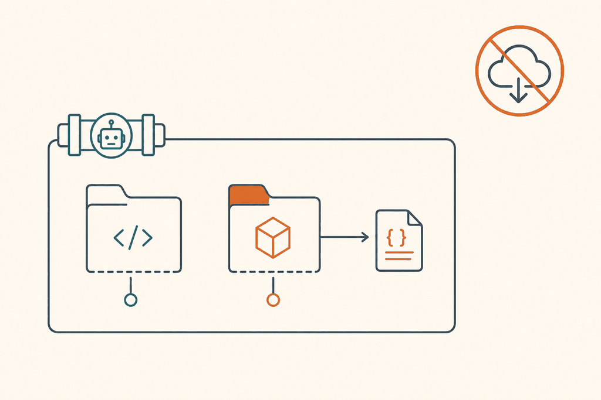
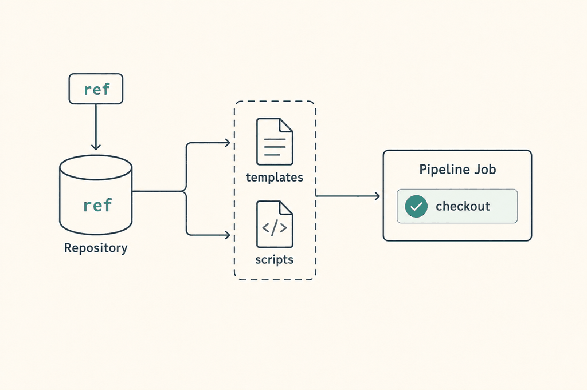

Plan: Run the Azure DevOps scripts from a checkout of bicep-action

Purpose
Make the Azure DevOps stage templates and the single-file pipeline run the scripts from a checkout of this repository, at the same ref as the templates. One version to pin, no run-time download of code, and no dependence on github.com for the scripts. This is the implementation plan for ADR 0008 and issue #61.
Problem
The templates are read through a resources.repositories entry, but each job then curls the scripts from github.com/.../raw/${WORKFLOW_VERSION}/scripts/ (plan-stage.yml:78-104, deploy-stage.yml:94-115) and the debug and summary scripts from raw.githubusercontent.com (plan-stage.yml:262,299, deploy-stage.yml:189,226). Users must set ref and WORKFLOW_VERSION to the same tag, the pipeline runs code fetched from a mutable tag, and an agent without access to GitHub fails. The scripts are also written into the workload repository, so they appear in its working tree and in the PSRule input.
Solution
Add a step template that checks out self and the template repository side by side (explicit paths), then prepends <checkout>/scripts to PATH, the way .github/actions/plan/action.yml:134-138 already does for GitHub. Every script step keeps the workload repository as its working directory through workingDirectory: $(WORKLOAD_PATH). The repository alias becomes a template parameter (default bicep_action). WORKFLOW_VERSION is deprecated: it is ignored for script resolution, and the reported version is derived from the checkout. The single-file pipeline gets its own repository resource and the same checkout.

ref selects the templates and the scripts together.Relevant Files
Existing Files
- existing
.azuredevops/templates/plan-stage.yml— download loop 78-104, debug and summary downloads 262 and 299,SOURCE_PATH55, PSRuleINPUT_PATH184, every script step 106-332. - existing
.azuredevops/templates/deploy-stage.yml— download loop 94-115, debug and summary downloads 189 and 226,SOURCE_PATH62, script steps 117-258. - existing
.azuredevops/ms.azure.deploy.yml— download loops 89-115 and 310-336,WORKFLOW_VERSION61-62,SOURCE_PATH69 and 286, PSRuleINPUT_PATH195, script steps 117-270 and 338-410. - existing
.azuredevops/README.md— file table and parameter table (lines 9-12, 25-33). - existing
docs/setup-azure-devops.md— line 51 (WORKFLOW_VERSION), line 56 (self-hosted agent requirements), step 5 table (37-41). - existing
docs/configuration.md— line 67 (script version row) and line 251 (WORKFLOW_VERSION). - existing
docs/how-it-works.md— line 61 (Install tools row). - existing
docs/examples/README.mdline 29;docs/examples/azure-devops/multi-environment.ymllines 5-8, 34;variable-group.ymllines 9, 28. - existing
README.mdline 101 — pin instruction. - existing
.github/workflows/release.yml—innofactororg/code-release@v2; read only, no change expected. - existing
.github/actions/plan/action.yml:134-138,.github/actions/deploy/action.yml:116-120— already run scripts from the action checkout; unchanged, used as the model. - existing
scripts/*.sh— unchanged. They source siblings with$(dirname "${BASH_SOURCE[0]}"), so they run from any folder.
New Files
- new
.azuredevops/templates/steps/checkout-and-scripts.yml— the two checkouts, the Locate scripts step and the deprecation warning, shared by both stage templates. - new
docs/adr/0008-bundle-ado-scripts.mdandspecs/0008-bundle-ado-scripts.html— this ADR and plan.
Implementation Phases
IMPORTANT: Execute every phase and task step by step, in order, top to bottom.
Status markers: [] idle · [wip] in progress · [x] complete · [f] failed. All start as []; the Build Plan workflow updates them as it works.
[] Phase 0: Spike the multi-checkout layout
The design rests on three platform facts that the documentation states loosely: where path: is rooted, what Build.SourcesDirectory is in a multi-checkout job, and whether resources.repositories[...].ref is readable at compile time. Settle them on a real agent before editing any template. No repository files change in this phase except the ADR if a fact turns out different.
1. Build a throwaway pipeline
[]In a scratch Azure DevOps project, create a pipeline with atype: githubrepository resourcebicep_action(refrefs/heads/feat/61-bundle-ado-scripts, GitHub service connection) and a second pipeline that uses atype: gitmirror of the repository in the same project.[]Two jobs, onejoband onedeploymentwithenvironment. Each runscheckout: selfwithpath: workload, thencheckout: bicep_actionwithpath: bicep-action, bothfetchDepth: 1.[]Print and record:pwd,$(Build.SourcesDirectory),$(System.DefaultWorkingDirectory),$(Build.Repository.LocalPath),$(Pipeline.Workspace),ls -la $(Pipeline.Workspace)/s, and${{ resources.repositories['bicep_action'].ref }}and.versionas a compile-time expression.[]Trypath: workloadandpath: s/workload, and a path outsides. Record which of them lands where. The plan below assumespath: workloadgives$(Pipeline.Workspace)/s/workload. If not, only the two stage variables in phase 1 change.[]In the same run, check that the GitHub credential is not left inbicep-action/.git/config(nopersistCredentials) and is left inworkload/.git/config(with it).
2. Testing Strategy
Observation on a Microsoft-hosted ubuntu-latest agent. Pass criterion: the folders and variables match the table in the ADR consequences section, or the ADR and this plan are corrected before phase 1 starts.
[]az pipelines runs show --id <run> --openthen read the log of both jobs — the spike log lists every path above for both ajoband adeploymentjob.[]Repeat for thetype: gitmirror — confirms the checkout works without a GitHub endpoint and shows what permission the build service needs.
[] Phase 1: The shared checkout step template
One place for the two checkouts, the PATH setup, the version derivation and the deprecation warning. Both stage templates include it, so the plan and deploy jobs cannot drift. Relative - template: includes resolve inside the repository that owns the including template, so this works when the caller reaches the stage template as @bicep_action.
1. Create .azuredevops/templates/steps/checkout-and-scripts.yml
[]Parameters:bicepActionRepository(string, defaultbicep_action). The step list is the only content.[]Checkout of the workload repository keeps today's options and adds the folder. The template repository is checked out without credentials. A checkout step needs a literal or template-time repository name, so the parameter is used as${{ parameters.bicepActionRepository }}.[]The Locate step fails early if the checkout is incomplete, adds the folder toPATH, derives the version and warns aboutWORKFLOW_VERSION.parameters: - name: bicepActionRepository type: string default: bicep_action steps: - checkout: self displayName: Checkout workload repository path: workload fetchDepth: 1 persistCredentials: true - checkout: ${{ parameters.bicepActionRepository }} displayName: Checkout bicep-action path: bicep-action fetchDepth: 1 persistCredentials: false - task: Bash@3 displayName: Locate scripts env: BICEP_ACTION_REF: ${{ resources.repositories[parameters.bicepActionRepository].ref }} inputs: targetType: inline script: | set -euo pipefail scripts="$(BICEP_ACTION_PATH)/scripts" if [ ! -f "${scripts}/install-tools.sh" ]; then echo "##[error]${scripts}/install-tools.sh not found. Is the repository resource '${{ parameters.bicepActionRepository }}' the bicep-action repository?" exit 1 fi chmod +x "${scripts}"/*.sh echo "##vso[task.prependpath]${scripts}" sha=$(git -C "$(BICEP_ACTION_PATH)" rev-parse --short HEAD) echo "##vso[task.setvariable variable=BICEP_ACTION_VERSION]${BICEP_ACTION_REF##*/} (${sha})" if [ -n "${WORKFLOW_VERSION:-}" ] && [ "${WORKFLOW_VERSION}" != "${BICEP_ACTION_REF##*/}" ]; then echo "##vso[task.logissue type=warning]WORKFLOW_VERSION (${WORKFLOW_VERSION}) is deprecated and ignored. The scripts come from the repository ref (${BICEP_ACTION_REF}). Remove WORKFLOW_VERSION." elif [ -n "${WORKFLOW_VERSION:-}" ]; then echo "##vso[task.logissue type=warning]WORKFLOW_VERSION is deprecated and ignored. Remove it." fi[]If phase 0 shows thatresources.repositories[...].refis not available at compile time, dropBICEP_ACTION_REFand report only the short commit (git rev-parse) plusgit describe --tags --alwaysafterfetchTags: true. Record the outcome in the ADR.
2. Variables every stage declares
[]The step template reads$(BICEP_ACTION_PATH), so each stage template defines both paths once undervariables:(done in phases 2 and 3):variables: WORKLOAD_PATH: $(Pipeline.Workspace)/s/workload BICEP_ACTION_PATH: $(Pipeline.Workspace)/s/bicep-action SOURCE_PATH: $(Pipeline.Workspace)/s/workload
3. Testing Strategy
YAML syntax and template expansion. Azure DevOps has no local compiler, so use the pipeline preview API against a scratch pipeline that includes the new file.
[]python3 -c "import yaml,sys; yaml.safe_load(open('.azuredevops/templates/steps/checkout-and-scripts.yml'))"— the file parses.[]shellcheck -s bashon the Locate script body pasted into a temp file — no quoting errors in the one new piece of shell.[]az devops invoke --area pipelines --resource preview --route-parameters pipelineId=<id> project=<p> --http-method post --in-file preview.json --api-version 7.1— the final YAML shows both checkouts with the expected paths and the resolvedBICEP_ACTION_REF.
[] Phase 2: Plan stage template
File: .azuredevops/templates/plan-stage.yml. Replace the checkout and download with the step template, then make every script step run in the workload folder. In a multi-checkout job the default working directory is the parent of both repositories, so a step without workingDirectory would not find main.bicep, ps-rule.yaml or the committed snapshot.
1. Parameters, header and variables (lines 7-58)
[]Add parameterbicepActionRepository(string, defaultbicep_action) afterserviceConnection(line 42-43) and document it in the header comment (lines 7-21). RemoveWORKFLOW_VERSIONfrom "Required Variables" (line 20) and note it is deprecated.[]Stagevariables:(52-58): changeSOURCE_PATH(line 55) and addWORKLOAD_PATHandBICEP_ACTION_PATHas in phase 1.SOURCE_PATHis used byaz-bicep.sh:35,az-deploy.sh:49andbicep-snapshot.sh:120-121to strip the prefix from output, so it must be the workload path or file names in comments get long.
2. Replace checkout and Install tools (lines 63-104)
[]Delete lines 63-66 (checkout: self) and insert:- template: steps/checkout-and-scripts.yml parameters: bicepActionRepository: ${{ parameters.bicepActionRepository }}[]Install tools (68-104): delete theSCRIPTSarray, thecurlloop and thechmod(lines 78-103). The script becomesinlineScript: install-tools.shand the task gainsworkingDirectory: $(WORKLOAD_PATH).install-tools.sh:41readsIN_TEMPLATE, which is relative to the workload root.
3. Every other script step gets the workload folder
Enumerated so none is missed. Remove the leading ./ so the script resolves through PATH, and add the input.
| Step (lines) | Task | Change |
|---|---|---|
| Existing tags (106-116) | AzureCLI@2 | inlineScript: existing-tags.sh; add workingDirectory. |
| Bicep build (118-129) | AzureCLI@2 | az-bicep.sh build; workingDirectory. Output file path is readlink -f of a path under the workload folder, so the bicep_build.file output stays valid. |
| Bicep build params (131-142) | AzureCLI@2 | az-bicep.sh build-params; workingDirectory. |
| Validate (144-154), What-if (156-166) | AzureCLI@2 | az-deploy.sh validate and what-if; workingDirectory. |
| PSRule config (168-178) | Bash@3 | psrule-config.sh; workingDirectory. RULE_OPTION is a path relative to the workload root. |
| PSRule analysis (180-189) | Bash@3 | psrule-analysis.sh; workingDirectory; change INPUT_PATH (line 184) from $(Build.SourcesDirectory) to $(WORKLOAD_PATH). Without this PSRule would scan both repositories. |
| PSRule report (191-200) | Bash@3 | psrule-report.sh; workingDirectory. |
| Cost estimate (202-214) | AzureCLI@2 | azure-cost.sh; workingDirectory. |
| Bicep snapshot (216-226) | AzureCLI@2 | bicep-snapshot.sh; workingDirectory. It reads the committed snapshot beside IN_TEMPLATE_PARAMS. |
| Debug information (228-272) | Bash@3 | Replace the curl block (261-272) with debug-info.sh. In env: set SOURCE_PATH: $(WORKLOAD_PATH) (line 252) and WORKFLOW_VERSION: $(BICEP_ACTION_VERSION) (line 257). Leave workingDirectory unset on this step: debug-info.sh:126-128 lists SOURCE_PATH only when it differs from pwd, so the default (parent) directory makes it print the workload folder. |
| Pipeline summary (274-309) | Bash@3 | Replace lines 297-309 with pipeline-summary.sh. WORKFLOW_VERSION: $(BICEP_ACTION_VERSION) (line 294). |
| Add comment (311-332) | Bash@3 | pr-comment.sh (line 332); workingDirectory: $(WORKLOAD_PATH) so LOG_PATH and any relative file reads match the other steps. |
| Upload logs (334-341) | PublishPipelineArtifact@1 | No change: $(Pipeline.Workspace)/logs is outside both checkouts. |
task.prependpath applies to the steps after the one that sets it, for the rest of the job. Steps that run condition: always() after a failure still see it. If the Locate step itself fails, the later steps are skipped or fail on "command not found", which is the right outcome.4. Testing Strategy
Template expansion checks, then a real run in each scenario of the final phase. Guard against regressions with greps that prove nothing downloads and nothing still assumes the old layout.
[]! grep -nE 'curl|raw\.githubusercontent|github\.com/innofactororg|WORKFLOW_VERSION=|\./[a-z-]+\.sh' .azuredevops/templates/plan-stage.yml— no download and no./script.shcall remains (theWORKFLOW_VERSIONenv mapping to$(BICEP_ACTION_VERSION)is allowed).[]grep -c 'workingDirectory: $(WORKLOAD_PATH)' .azuredevops/templates/plan-stage.yml— is 12: Install tools, Existing tags, Bicep build, Bicep build params, Validate, What-if, PSRule config, PSRule analysis, PSRule report, Cost estimate, Bicep snapshot and Add comment. Debug, Summary and Upload logs are the exceptions.[]Preview API on the multi-environment example — the expanded YAML has the checkout template once per plan stage and no${{ }}left.
[] Phase 3: Deploy stage template
File: .azuredevops/templates/deploy-stage.yml. The job is a deployment job with environment. It has download: none and an explicit checkout today, so no implicit checkout changes. The same template include works under strategy.runOnce.deploy.steps. Include download: none first, then the step template.
1. Parameters, header and variables (lines 7-65)
[]AddbicepActionRepositoryafterserviceConnection(50-51); update the header (7-21, removeWORKFLOW_VERSIONat line 21).[]Stagevariables:(59-65): same three variables as the plan stage (SOURCE_PATHat line 62 changes). The job-levelvariables(70-73) that read plan outputs are unchanged.
2. Replace checkout and Install tools (lines 78-115)
[]Keep- download: none(line 78). Replace lines 79-82 with the step template include (indented understeps:, as in phase 2).[]Install tools: delete 94-114, script becomesinstall-tools.sh, addworkingDirectory.
3. Remaining steps
| Step (lines) | Change |
|---|---|
| Existing tags (117-127) | existing-tags.sh, workingDirectory. |
| Check Azure providers (129-146) | Inline script keeps its guard; last line becomes azure-providers.sh; workingDirectory. |
| Deploy (148-157) | az-deploy.sh create, workingDirectory. The deploy reads the template and parameters from the workload checkout, so the same ref of the workload repository that produced the plan must be checked out; unchanged from today. |
| Debug information (159-199) | Replace 188-199 with debug-info.sh; SOURCE_PATH: $(WORKLOAD_PATH) (180), WORKFLOW_VERSION: $(BICEP_ACTION_VERSION) (184). |
| Pipeline summary (201-236) | Replace 225-236 with pipeline-summary.sh; WORKFLOW_VERSION (221) as above. |
| Add comment (238-258) | pr-comment.sh (258), workingDirectory. |
| Upload logs (260-267) | No change. |
4. Testing Strategy
[]! grep -nE 'curl|raw\.githubusercontent|github\.com/innofactororg|\./[a-z-]+\.sh' .azuredevops/templates/deploy-stage.yml— nothing downloaded, no./calls.[]Preview API onvariable-group.yml— expansion succeeds with thedeploymentjob and the environment.[]Run plan and deploy in scenario A (final phase) — confirmsBICEP_VERSIONand the providers output still flow through and the stack deploys from the workload folder.
[] Phase 4: Single-file pipeline
File: .azuredevops/ms.azure.deploy.yml. It is copied into the workload repository, so there is no calling pipeline to define a repository resource. Decision: option 2 of the issue. The file gets its own resources.repositories entry and the same checkout. It cannot include steps/checkout-and-scripts.yml because that file is in the repository that this checkout is supposed to fetch, so the steps are inlined once per stage. The README describes the stage templates as the recommended route for more than one environment.
1. Resource and variables
[]Insert beforevariables:(line 11):resources: repositories: - repository: bicep_action type: github name: innofactororg/bicep-action ref: refs/tags/v1 endpoint: github_connection # a GitHub service connection in this project[]Delete theWORKFLOW_VERSIONvariable (lines 61-62). Stage variablesSOURCE_PATH(69, 286) change to$(Pipeline.Workspace)/s/workload; addWORKLOAD_PATHandBICEP_ACTION_PATHto both stages.
2. Steps
[]Plan: replacecheckout: self(74-77) and the Install tools loop (79-115) with the two checkouts and the Locate step from phase 1 (inlined), theninlineScript: install-tools.sh.[]AddworkingDirectory: $(WORKLOAD_PATH)and drop./for the steps at lines 117-127, 129-140, 142-153, 155-165, 167-177, 179-189, 191-200, 202-211, 213-225, 227-237 and the Add comment step (about 245-259). ChangeINPUT_PATH(line 195) to$(WORKLOAD_PATH).[]Deploy: same edits at 300-336 (checkout and Install tools), 338-348, 350-366, 367-376, and the Add comment step (about 380-395). The two "Show debug info" steps (261-270, 400-410) only print the environment; leave them.[]Add a comment above the repository resource explaining thatrefis the only version to set, and that a mirror in Azure Repos usestype: gitwithname: <project>/<repo>and noendpoint.
3. Testing Strategy
[]! grep -nE 'curl|WORKFLOW_VERSION|github\.com/innofactororg/bicep-action/raw' .azuredevops/ms.azure.deploy.yml— the only remaininggithub.com/innofactororgtext is the repositoryname:.[]Copy the file into a scratch repository, create the pipeline, open a pull request with a trivial Bicep change — plan, comment and deploy succeed (scenario A).
[] Phase 5: Documentation and examples
Stop asking for two matching versions. Describe the new folder layout and the deprecation. Plain, direct text.
1. Edits
[]docs/examples/azure-devops/multi-environment.yml: rewrite lines 5-8 ("Pinrefto a release tag. The templates and the scripts both come from that ref."); deleteWORKFLOW_VERSION: v1(line 34). Add a commentedtype: gitalternative to the repository resource (25-29). Add a one-line note under- template:thatbicepActionRepositoryis needed only when the alias is notbicep_action.[]docs/examples/azure-devops/variable-group.yml: removeWORKFLOW_VERSIONfrom the variable list (line 9) and fix the comment at line 28 (ref: refs/tags/v1 # the only version to set).[]docs/examples/README.md:29: "Azure DevOps: setrefon the repository resource. Templates and scripts come from it."[]docs/configuration.md: row at line 67 showsrefinstead ofWORKFLOW_VERSION; line 251 becomes "Deprecated. Ignored. The scripts come from the repositoryref. Remove it." Add thebicepActionRepositoryparameter to the Azure DevOps section.[]docs/setup-azure-devops.md: line 51 drops "SetWORKFLOW_VERSION…" and says to setref; line 56 addsgitto the self-hosted agent list and notes that the scripts need no access to GitHub, but Bicep, PSRule and the cost estimator downloads do; add a short "Where the repository is checked out" paragraph:$(Pipeline.Workspace)/s/workloadand$(WORKLOAD_PATH)for extra steps; add a "Mirror in Azure Repos" subsection (type: git, read access for the build service of the project).[]docs/how-it-works.md:61: "Logs the Azure CLI version and installs Bicep; in Azure DevOps, the scripts come from the checked-out bicep-action repository."[].azuredevops/README.md: the file table saysms.azure.deploy.ymlneeds a repository resource; addbicepActionRepositoryto the parameter table (lines 25-33); add a "Migrating" note: removeWORKFLOW_VERSION, keepref.[]README.md:101: "Pin a release tag:@v1on GitHub, andref: refs/tags/v1on the repository resource in Azure DevOps."[]Checkdocs/troubleshooting.mdfor an entry on a failed script download and replace it with "bicep-action checkout failed: check the service connection and the repository alias".
2. Testing Strategy
[]grep -rn WORKFLOW_VERSION README.md docs .azuredevops— every hit is a deprecation note or the env mapping in the stage templates.[]npx -y markdownlint-cli2 "docs/**/*.md" "README.md" ".azuredevops/README.md"— no new lint findings (compare to a run onmain).[]for f in docs/examples/azure-devops/*.yml; do python3 -c "import yaml,sys; yaml.safe_load(open('$f'))"; done— examples still parse.
[] Phase 6: Release and compatibility
No code change in the release workflow. .github/workflows/release.yml calls innofactororg/code-release@v2, which creates the release tag and moves only the v2026 major tag. The v1 tag, which the examples pin, is moved by hand. That is where the change reaches users, so the order matters.
1. Release order
[]Merge tomain. Run the Release workflow with a new patch tag (v1.0.8or the next free one).[]Before movingv1, run scenario D below against the new tag. Only thengit tag -f v1 <sha> && git push -f origin v1. Pipelines pinned tov1.0.0tov1.0.7keep their old templates and the old download.[]Release notes (via.github/release.ymlcategories) say: "Azure DevOps: scripts now come from the checkout. RemoveWORKFLOW_VERSION. If you pinrefto a branch andWORKFLOW_VERSIONto a tag, the scripts now followref."
2. Testing Strategy
Four scenarios, each run on a Microsoft-hosted agent unless stated.
| Scenario | Setup | Pass criteria |
|---|---|---|
| A. GitHub service connection | multi-environment.yml with type: github, ref set to the feature branch, no WORKFLOW_VERSION. | Plan, PR comment and deploy succeed. The log of Locate scripts shows the branch and short commit. Changing only ref to another tag changes the reported commit. |
| B. Mirror in Azure Repos | Mirror the repository into the same project, resource type: git, name: <project>/bicep-action, no endpoint. Repeat once with the mirror in another project. | Same results. The cross-project case shows the permission the build service needs; write it in the docs. |
| C. No access to github.com | Self-hosted agent whose firewall blocks github.com and raw.githubusercontent.com, with a mirror (scenario B), Bicep CLI and PSRule modules preinstalled, VERSION_ACE empty. | All steps pass. Any curl to GitHub in the log fails the scenario. Without the preinstalls the run still fails at az bicep install; that is expected and is documented. |
| D. Legacy variable | A pipeline that still sets WORKFLOW_VERSION: v1 and ref: refs/tags/v1, and one with ref on the feature branch. | Both run. The first logs the short deprecation warning; the second logs the mismatch warning and uses the scripts of ref. |
| E. Layout regression | A user step added after the template that runs ls and git status in $(WORKLOAD_PATH). | The working tree has no downloaded scripts and no changes. |
[]Scenarios A to E pass and their run URLs are added to the pull request description.[]gh run list -R innofactororg/bicep-action --workflow release.yml -L 1— the release run completed;git ls-remote --tags origin v1shows the new SHA.
Validation Commands
Execute these commands to validate the entire plan is complete:
[]! grep -rnE 'curl .*(github\.com|githubusercontent)|raw\.githubusercontent\.com/innofactororg' .azuredevops— no script download is left in any Azure DevOps file.[]git diff --stat main -- scripts .github— empty; the scripts and the GitHub actions did not change.[]shellcheck scripts/*.sh— still clean (nothing changed, guards against accidental edits).[]for f in .azuredevops/*.yml .azuredevops/templates/*.yml .azuredevops/templates/steps/*.yml docs/examples/azure-devops/*.yml; do python3 -c "import yaml; yaml.safe_load(open('$f'))" || echo FAIL $f; done— every YAML file parses.[]Scenarios A to E from phase 6 — the behaviour in the acceptance criteria of issue #61 is proven on a real agent.
Questionables
Does path: workload land at $(Pipeline.Workspace)/s/workload?
Assumed, from the documented rule that custom paths are rooted at the sources folder. The documentation also says Build.SourcesDirectory is the parent in multi-checkout, which the design does not depend on. Phase 0 settles it. If wrong, only the two path variables change.
Is the single-file pipeline still worth keeping once it needs a GitHub service connection?
It used to need nothing but the file. Option 2 adds a connection, which is a step back for the quick start. Alternatives: keep a documented SHA-pinned download variant for users without a connection (issue option 3, more maintenance), or retire the file and point to the stage templates (issue option 1, which still leaves the curl). The plan picks option 2; the maintainers may prefer to keep an offline-capable variant.
Ignore WORKFLOW_VERSION, or honour it when it differs from ref?
Ignoring it is the simple reading of the issue, and the only way to get one version. The cost is a silent change for users who set ref: main and WORKFLOW_VERSION: v1 on purpose. The plan logs a warning in that case. Removal of the variable can be announced for the next major release.
Warn once, or fail, when the workload repository path assumption breaks user steps?
Users with extra steps in the same job that use $(Build.SourcesDirectory) as the repository root will break silently. The docs cover it; a compile-time check is not possible. A release note and the E scenario are the only guard.
Should BICEP_ACTION_VERSION come from the resource ref or from git describe?
The ref is cheap but may be a branch. git describe needs fetchTags and a deeper fetch. The plan uses the ref plus the short commit, which is enough to identify the scripts. Confirm that the compile-time resources.repositories[...].ref expression works in phase 0.
Who owns moving v1, and is a major tag for the new behaviour cleaner?
The tag is moved by hand today. Because the new templates need a repository resource in the single-file pipeline and change the folder layout, a maintainer may prefer a v2 tag for the Azure DevOps side. The plan keeps v1 because the stage-template contract (parameters, variables) is unchanged.
Is the "no access to github.com" criterion achievable?
Only for the scripts. az bicep install (install-tools.sh:43, bicep-version.sh:44,56), PSRule from the PowerShell Gallery (psrule-analysis.sh:115) and the cost estimator from GitHub releases (azure-cost.sh:163-164) still reach out. The issue text implies a fully offline run; this plan delivers script independence and documents the rest. A follow-up could cache those tools.
Notes
Surprises in the current code
- The single-file pipeline has no
debug-info.shorpipeline-summary.shdownload; its "Show debug info" step only prints the environment. The issue says the single file "does the same" for all downloads; it only does for the Install tools loops. WORKFLOW_VERSIONis not read by any script. Only the URLs, two error messages andenv:blocks use it.- Downloaded scripts land in the workload working tree today, so PSRule's
INPUT_PATH(the sources directory) includes them. PATH-based execution removes that. - The GitHub composite actions already run the bundled scripts through
GITHUB_ACTION_PATHand are unaffected.
Rejected approaches
- Copying the scripts into the workload checkout: repeats the tree pollution.
- Pipeline artifact or container image for the scripts: needs a publishing pipeline for a public repository, more than a checkout.
- SHA pinning with a checksum file: still a run-time fetch and a second thing to publish.
Risks
- A repository resource that is not authorised for the pipeline prompts for permission on the first run. This already applies to template expansion, so no new prompt is expected for
type: github. For a mirror in another project, project settings "Limit job authorization scope" may block the checkout. - A step template include inside a
deploymentjob strategy is allowed; confirm in phase 0 thatcheckoutwithpathworks there.